Source
Source


TubeMap¶
The ClearMap.Scripts.TubeMap script implements the analysis done
in [Kirst2020].
See the TubeMap tutorial for usage.
The main image processing steps are defined in the vascualture expert
ClearMap.ImageProcessing.Experts.Vasculature.
Pipeline¶
TubeMap is a pipeline to convert raw 3d data of
tubular networks into graph representations illustrated here:

Figure 3 TubeMap pipeline overview.¶
The image processing part is the core of this pipline and composed of the following image processing steps:
and is illustrated here:

Figure 4 TubeMap image processing pipeline.¶
Clipping, masking and first binarization¶
In a first step of the processing pipeline the stitched raw volumetric image is clipped above intensities that can be unambiguously assigned to foreground pixels. Because of ‘stray’ or ‘blur’ artifacts from bright vessels (Figure 4 D) this upper intensity is chosen conservatively and will only include very large and bright vessels. The voxels clipped in this way contribute the first foreground voxels to the final binary image.
Voxels outside the brain sample show a distinct lower intensity value than even background voxels within the brain. Thus, in parallel to the clipping of high intensities, low intensities are clipped below the sample background and the clipped pixels are designated as background. Non-background pixels are used to define a mask for the brain sample which is used throughout the processing pipeline to restrict all calculations to the brain sample voxels.
Light-sheet artifact correction¶
Light-sheet microscopy introduced ‘stripe’ and ‘shadow’ artifacts (Figure 4 C). While methods exist to correct for those artifacts (e.g. via Fourier analysis, or stripe detection), they have a high computational demand making them difficult to apply to images of TB size.
We thus developed a method for fast and efficient light-sheet artifact correction. The method uses the fact that the stripe artifact occurs along a predefined axis in the images as the light-sheet always enters the sample from the same direction, and we used a single fixed light sheet illumination. Moreover, background voxels typically show similar intensities along the stripe axis over a certain length scale.
Thus, for each voxel  we estimate the light-sheet stripe
artifact intensity
we estimate the light-sheet stripe
artifact intensity  by calculating a predefined
percentile of the voxel intensities in a region
centered around
by calculating a predefined
percentile of the voxel intensities in a region
centered around  and highly elongated along the
stripe-artifact axis (Figure 4 C). The length of this region (or
structuring element) for the percentile filter along the stripe artifact
axis is chosen to be of the scale on which the stripe artifact intensity
changes, while the width and depth are chosen to be below the size of
the stripe artifacts cross-section. Subtracting this estimate from the
image leads to good corrections of the stripe artifact except at voxels
that are part of longer vessels aligned with the artifact axis. To
prevent this type of voxels to be removed, we also estimate the local
background intensity 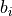 as the percentile of
the voxel intensities in a square shaped region centered
around. The size of this region is chosen larger
than the largest vessel structures in the brain sample. This background
estimate is compared to the light-sheet artifact estimate and voxel
intensity
and highly elongated along the
stripe-artifact axis (Figure 4 C). The length of this region (or
structuring element) for the percentile filter along the stripe artifact
axis is chosen to be of the scale on which the stripe artifact intensity
changes, while the width and depth are chosen to be below the size of
the stripe artifacts cross-section. Subtracting this estimate from the
image leads to good corrections of the stripe artifact except at voxels
that are part of longer vessels aligned with the artifact axis. To
prevent this type of voxels to be removed, we also estimate the local
background intensity 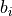 as the percentile of
the voxel intensities in a square shaped region centered
around. The size of this region is chosen larger
than the largest vessel structures in the brain sample. This background
estimate is compared to the light-sheet artifact estimate and voxel
intensity  corrected according
corrected according
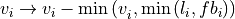
where  is a factor allowing to adjust the background estimate.
The result of this correction is shown in Figure 4 C.
is a factor allowing to adjust the background estimate.
The result of this correction is shown in Figure 4 C.
Processing speed is limited by the local percentile filters. We use our fast 3d rank filter library to speed up the computation. On top, the elongated shape of structuring element for the light-sheet estimate allows further optimization by shifting the structuring elements for local histograms estimation in the direction of the artifact axis. For background estimation we use large structural elements which allow the use of sub-sampling and interpolation.
Median filter¶
In the third step the light sheet corrected image is 3d median filtered with a small structuring element to smooth voxel intensities but preserve edges. We use our fast sliding histogram 3d rank filter library for this step.
Pseudo deconvolution and second binarization¶
The data showed ‘blur’ or ‘stray’ artifact producing ‘halos’ of high intensity voxels around bright and large vessels (Figure 4 D). Without correction of this artifact, high thresholds had the tendency to remove weaker and smaller vessels and capillaries connecting to the larger ones, while low threshold values have the tendency to join larger neighboring vessels, even when local or adaptive thresholding was used. While this artifact could be corrected via an appropriate deconvolution step, such a step would add a large computational overhead for our very large data sets.
We thus designed a ‘pseudo deconvolution’ step that corrects for the ‘blur artifact’ with much less computational demands. High intensity voxels are identified via a threshold and ‘blured’ using a 3d Gaussian filter. The blurred result is then subtracted from the original image and the image rectified while the values of the high intensity voxels are preserved (cf. Figure 4 D).
The resulting ‘deconvolved’ image is then thresholded at a lower intensity level than the one used to determine the high intensity voxels in order to capture the structure of the bright vessels and the resulting binary added to the final binarized image.
Adaptive threshold and third binarization¶
In order to capture smaller and less bright vessels the deconvolved image is further subjected to a local histogram-based adaptive threshold and the result added to the final binarized image.
We use our local histogram sampling framework to locally apply the Ridler-Calvard method (Ridler and Calvard, 1978) that determines a threshold by separating the voxels of the image into two groups such that the threshold is midway between the mean intensities of these groups.
Equalization and fourth binarization¶
While the previous stream of processing and binarization steps (4a,5a) is designed to mainly capture larger or brighter vessels, in parallel we designed a second stream (4b, 5b) for the binarization of weaker and smaller vessels and capillaries. While our clearing and staining protocol is highly optimized to homogeneously label the vasculature, regional variations in the overall luminance exists and particularly smaller and weaker vessels in the deeper regions are often not detected by the first stream of binarizations.
In this step we thus apply a custom designed equalization filter to the
median filtered image form step 3. The filter calculates for each voxel
a lower and upper intensity ( and 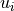)
via a lower and upper percentile (
and 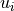)
via a lower and upper percentile ( and
and  ) of
the voxel intensities in a rectangular region
) of
the voxel intensities in a rectangular region  centered
around . The region is chosen to be larger than the large
vessel structures and our efficient histogram sampling framework is used
to speed up computation. The voxel intensity is then normalized via
centered
around . The region is chosen to be larger than the large
vessel structures and our efficient histogram sampling framework is used
to speed up computation. The voxel intensity is then normalized via

with normalization factor
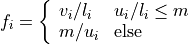
and  a maximal intensity value for the upper percentile. As a
result the image shows a more homogeneous intensity distribution across
the sample (Figure 4 E).
a maximal intensity value for the upper percentile. As a
result the image shows a more homogeneous intensity distribution across
the sample (Figure 4 E).
A fixed conservative threshold is applied to the normalized image and added to the final binary.
Tube filtering and fifth binarization¶
In a final step, a generalized Frangi tube filter (Frangi et al., 1998;
Sato et al., 1998) to enhance smaller vessels and capillaries is
applied. The filter first smoothes the image with a 3d Gaussian of a
given scale and then calculates the sorted eigenvalues
of the
Hessian matrix at each voxel . The tubeness measure
 is then calculated according to
is then calculated according to
![\mathbf{t}_{\mathbf{i}} = \left\{ \begin{array}{ll}
\left| \mathbf{\lambda}_{\mathbf{3,i}} \right|\left| \frac{\mathbf{\lambda}_{\mathbf{2,i}}}{\mathbf{\lambda}_{\mathbf{3,i}}} \right|^{\mathbf{\gamma}_{\mathbf{23}}}\left( \mathbf{1 +}\frac{\mathbf{\lambda}_{\mathbf{1,i}}}{\left| \mathbf{\lambda}_{\mathbf{2,i}} \right|} \right)^{\mathbf{\gamma}_{\mathbf{12}}} & \mathbf{\lambda}_{\mathbf{1,i}}\mathbf{\leq 0,}\mathbf{\lambda}_{\mathbf{3,i}}\mathbf{\leq \ }\mathbf{\lambda}_{\mathbf{2,i}}\mathbf{< 0} \\
\left| \mathbf{\lambda}_{\mathbf{3,i}} \right|\left| \frac{\mathbf{\lambda}_{\mathbf{2,i}}}{\mathbf{\lambda}_{\mathbf{3,i}}} \right|^{\mathbf{\gamma}_{\mathbf{23}}}\left( \mathbf{1 - \alpha}\frac{\mathbf{\lambda}_{\mathbf{1,i}}}{\left| \mathbf{\lambda}_{\mathbf{2,i}} \right|} \right)^{\mathbf{\gamma}_{\mathbf{12}}} & \mathbf{\alpha}\frac{\mathbf{\lambda}_{\mathbf{1,i}}}{\left| \mathbf{\lambda}_{\mathbf{2,i}} \right|}\mathbf{< 1,}\mathbf{\lambda}_{\mathbf{3,i}}\mathbf{\leq \ }\mathbf{\lambda}_{\mathbf{2,i}}\mathbf{< 0} \\
\mathbf{0} & \mathbf{\text{else}} \end{array} \right.](_images/math/d20130fabe5b003a3ce1a26abfff1c07b1f5f4ec.png)
with parameters ,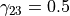 and chosen to enhance tube like vessels but also account for their bending (Sato et al., 1998).
A threshold is applied to the tube filtered image to contribute the last part to the final binary image.
Binary filling¶
In this step, the combined binary image is subjected to a 3d binary filling operation. While the final image is binary and thus already smaller in size it is still a large array. Splitting the filling operation into subsets of the data would entail complex joining operations. TubeMap thus implements a parallel binary filling code based on flood filling from the border that operates on memory maps, allowing the binary filling of arbitrarily sized images not limited by memory.
Deep Vessel Filling¶
As antibodies only target vessels walls receptor proteins, larger vessels appear as empty tubes. Given that our method to extract the centerline that relies on topology-preserving 3D thinning, it is necessary to generate solid tubes on the binary mask. Therefore, we designed a method to detect and fill empty tubes to allow a correct centerline extraction via erosion. Vessel filling is a complex task on our data, as the shape, size and continuity of the vessel walls are variable. For this reason, we decided to use a deep convolutional neural network to solve this task.
Architecture¶
We based the initial network architecture on the DeepVesselNet architecture from Tetteh and colleagues
(Tetteh et al.), which detects the centerline from 3D scans of filled vessels. We iterated modification of this architecture to obtain the following: 2 maxpooling layers followed by 2 3D convolutional layers with dropout with kernel size 7 and 5 and 16 and 32 channels respectively. Then we added a depthwise separable convolutional layer of size 32 with kernel size of 3. Next, two new other convolutional layer are added followed by upsampling layers to get back to the initial input data size before the maxpool layers, and a last convolutional layer of size 2 followed by a center shifted sigmoid function to map output values between 0 and 1, and a softmax layer (Figure 5 E).
The depthwise separable convolutional layer (desep conv) consists in a depthwise convolution followed by pointwise convolution. The idea is to increase the network performance while keeping the same amount of parameters.
Optimization function¶
Our loss function
was composed of a classic binary cross entropy loss to minimize the difference between the output 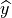 and the ground truth 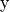fed to the network:
and of a class balancing loss as described in (Tetteh et al., 2018).
Vessels account for a minority of voxels (about 15% of the data in our case). This makes the training memory and time consuming as large amounts of data are needed to reach convergence. Therefore, we used a loss which favors false positives and strongly penalizes false negative during the training, preventing the network to favor segmenting pixels as background.
Training¶
To generate a training vascular brain graph for training, we generated datasets comprised only of filled tubes. To obtain such datasets, we designed a preparation of whole head fixation, in order to retain the blood in the tissue (Figure 5 A), and see the section “blood retention” for the preparation of these brains. After dissection, we immunostained the brain for circulating immunoglobulins (Liebmann et al., 2016), and complemented it with an immunostaining against podocalyxin to insure a better continuity of the labeled capillaries (Figure 5 B), and we double-stained for Smooth Muscle Actin as before. We cleared and imaged the labeled brains with identical conditions to the endothelial wall-stained samples. Vascular graphs were generated using the same multi-path binarization pipeline (Figure 4 A) and centerline extraction as all other datasets (Figure 5 C). These graphs contain a natural distribution of vessel diameters, which we used to build training cubes of hollow tubes, for which the ground truth is the filled version (Figure 5 D). We designed and trained the DNN on these data to fill hollow tubes into solid tubes.
We trained our network on 100*100*100 pixel wide blocks of artificially generated hollow vessels data. From the skeleton, we generated circular empty tubes as input training data and the filled counterpart as ground truth. To diversify the data, we also generated cubes from both the IgG/Podocalyxin dense capillary channel and from the Acta2 channel alone which has sparse arterial tubes. To diversify the vessel radii, we filtered out capillaries (which are already filled at this resolution) from the graph data to only keep vertices corresponding to vessels with larger radii. We also artificially increased the vessel radii on the sparse arterial graph to mimic underrepresented large vessels as they only account for a minority of the vessels in the dataset.
A preprocessing step was added, consisting in adding noise by setting randomly voxel values as foreground to mimic background dots that appear occasionally on binarized data, and train the network to ignore them.
We used a batch size of 8 and trained for 100 epochs.
Application¶
We used the network on the CD31 + Podocalyxin stained binarized scans (hollow vessels). The binary masks of 1 channel from 1 hemisphere represents approximately 100Gb and cannot be loaded to the network directly. Therefore we divided the binary masks of the generic vessels (Pdclx + CD31) channel in blocks of 500*500*500 voxel with a 100 voxel overlap in every direction.
We also filled the binary masks of the arterial channel. As Acta2+ vessels have larger radii and are sparse, we used blocs of 900*900*900 voxels with a 200 voxel overlap, and down sampled the blocks by a factor of 4.

Figure 5 TubeMap’s deep vessel filling.¶
Binary smoothing¶
In the final step we smooth the binary data, as rough surfaces of vessels can lead to artifacts downstream in the skeletonization of the vasculature network. We therefore developed a discrete topology based binary smoothing algorithm based on (Németh et al., 2010).
For each voxel the local discrete topology in a
3x3x3 cube  centered around is considered and
depending on the configuration the center voxel is updated as follows:
centered around is considered and
depending on the configuration the center voxel is updated as follows:
If the center voxel is foreground the center voxel is set to background
if (i) there are less than three foreground voxels in the cube, (ii) the
local topology matches the configuration or any of its
rotations towards each of the 6 faces of the cube (iii) the topology
matches or  or any of the 4 rotations around
the z-axis or any of those further rotated towards each face (i.e. 24
rotations), (iv) if the topology matches or any of its 12
rotations that rotate a fixed edge onto another one (v) the topology
matches or any of its 8 rotations that rotate a corner
onto another one.
or any of the 4 rotations around
the z-axis or any of those further rotated towards each face (i.e. 24
rotations), (iv) if the topology matches or any of its 12
rotations that rotate a fixed edge onto another one (v) the topology
matches or any of its 8 rotations that rotate a corner
onto another one.
If the center voxel is background the center voxel is set to foreground if either (i) the number of background pixels in the cube is less than 6, (ii) the inverse topology in which foreground is exchanged with background fulfills either of the conditions for the foreground pixel smoothing above, (iii) the center voxel has at least 3 neighbors in its 6-connected neighborhood and two of those voxels lie along one of the main axes.
The processing of the smoothing is optimized via assigning a unique
topological index  to each possible topological
configuration of the 3x3x3 cube around the center voxel and
pre-calculating a lookup-table from this index to the resulting center
voxel value according to the smoothing rules above. The index
for each voxel in the image is obtained by considering the
binary cube configuration as a 27 bit representation of that index, i.e.
by convolving the local cube with a kernel
to each possible topological
configuration of the 3x3x3 cube around the center voxel and
pre-calculating a lookup-table from this index to the resulting center
voxel value according to the smoothing rules above. The index
for each voxel in the image is obtained by considering the
binary cube configuration as a 27 bit representation of that index, i.e.
by convolving the local cube with a kernel  . To further speed
up the computation, we make use of the fact that the kernel is
separable and convolution with it can be calculated via three subsequent
one-dimensional convolutions along the three axes.
. To further speed
up the computation, we make use of the fact that the kernel is
separable and convolution with it can be calculated via three subsequent
one-dimensional convolutions along the three axes.
Skeletonization and graph construction¶
In a final step of the TubeMap image processing pipeline the binarized image is converted to a graph. The graph construction is done in three steps: (i) the binary image is skeletonized, (ii) loose ends in the skeleton are detected and possible continuations to other loose ends detected via tracing in the non-binarized image data, (iii) the final skeleton is converted into a graph.
Skeletonization¶
In the first step of the graph construction the binary image is
skeletonized. While a large number of skeletonization algorithms exist,
they were not suitable for the size of our data sets with running times
of over 7 days on our workstation. We thus implemented a fast
skeletonization algorithm for terabyte volumetric images that runs in
45min. As skeletonization via thinning is context dependent the
processing cannot be easily split into blocks of data. Instead, our
algorithm is designed to handle TB sized data as whole. To increase the
processing speed, we pre-calculate the thinning actions for all possible
local topological configurations into a look-up table and use linear
indexing of the image arrays. The algorithm uses 3d parallel thinning
with 12 sub-iterations as described in (Palágyi and Kuba, 1999) with a
series of optimizations. In short, for each voxel the
algorithm decides if that voxel can be thinned away by considering the
topology in the local 3x3x3 cube centered
on and using the rules defined in (Palágyi and Kuba,
1999) (T1-T14). This process is done in parallel. As parallel thinning
of surface voxels may lead to the disconnection of center lines or other
topological changes in the final skeleton, the thinning is done in 12
sub-iterations ‘attacking’ the surface pixels from 12 different
directions corresponding to the mid-points of the 12 edges of a cube.
To speed up processing on large images we implemented a series of additional optimizations. First, as the thinning is operating on foreground pixels only and their number significantly decays during the thinning iterations, calculation of the local topological configuration around each voxel is restricted to the foreground pixels only. In each thinning step only voxels that are 6-connected to the background are candidates for removal, so the calculation is further restricted to those border voxels. Second, the topological characterization around each voxel is done using topological indexing together with a pre-calculated look-up table that encodes the thinning rules as described above in the binary smoothing step. Third, all calculations are done on linear arrays using linear indexing, instead of 3d volumetric images. This speeds up addressing foreground pixels and reduces memory requirements by a factor of three. Fourth, all calculations, including candidate voxel detection and topological indexing are parallelized.
The skeleton is post-processed by removing foreground voxels of center lines with at least one end-point (a foreground voxel with only one neighbor in the 27-neighborhood) and a length to a branch point (a foreground voxel with more than two neighbors) or another end-point below a critical length. End-points and branch-points detection is efficiently done in parallel by calculating the number of neighbors via convolution with a 3x3x3 cube of ones around each foreground pixel.
End-point tracing¶
In this optional step, the skeleton is further post-processed by trying
to connect loose ends of the skeleton center-lines using tracing in the
non-binarized tube-filtered image. To achieve this, the end-points of
the center-lines are detected as described above. For each end-point an
A*-search in the voxel space is performed to find a path with the lowest
cost towards the closest end-point. The cost  for a path
for a path
 is defined as
is defined as
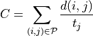
where is a pair of neighboring voxels
(27-neighbourhood) in the path, the
Euclidian distance between the voxels, and is the tubeness
measure defined in (1). If the cost for the path is below a threshold
the path is added to the binary image. If the cost is too high, a path
to the binary mask of the vasculature is traced using the same cost
function. If the cost is below a threshold the path is added to the
binary mask. The resulting binary is re-skeletonized as described in the
previous step.
The purpose of this tracing step is to detect small vessels of weak intensity that were partly missed in the binarization process and thereby to reduce the number of open ends in the vasculature graph. For our data sets and with the above described equalization methods this step was usually not necessary (cf. Figure 4).
Graph construction¶
To facilitate the analysis of the vasculature network, the skeletonized
binary image is turned into a graph representation that captures the
topology of the vasculature network. A graph is a
collection of vertices and edges
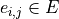between two vertices and
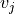. The vasculature network carries additional geometric
information (e.g. vessel shape or radius) and can be accompanied by
additional local data (e.g. expression levels of molecular markers). We
thus consider graphs in which the vertices and edges hold a set of
additional properties (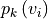,
), such as spatial, geometric or molecular
information.
Graphs extracted from the vasculature consist of millions to hundreds of millions of vertices. To enable the analysis of those large graphs, TubeMap provides a high-performance graph module based on the graph-tool library (P. Peixoto, T. (2014)) and boost graph libraries (https://www.boost.org/doc/libs/1_66_0/libs/graph/doc/index.html). In addition to a large number of graph manipulation and analysis routines, our module also provides graph classes that handle the spatial geometry and other annotational information, as well as the visualization of the graphs in 3d space.
In TubeMap, graph construction from the skeletonized image is done as follows: first, a raw graph is constructed by turning each foreground voxel of the skeleton into a vertex that also carries the positional information of the voxel. The vertices are then connected via undirected edges if they are neighbors (27-neighborhood) in the skeleton image. This process can result in local all-to-all connected cliques with more than 2 vertices at branch points of the skeleton. Thus, those cliques are identified and replaced by a single vertex with a coordinate position that is the mean of the clique vertices. Isolated vertices or small components not connected to the giant component are typically removed from the graph for downstream analysis.
In a second step, the raw graph is reduced to a branch graph consisting
of vertices that are end-points or branch-points only (i.e. vertices
with edge degree 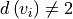).
The vertices of this graph are then connected by edges if there is a
path of vertices of degree 2 between them. The connection is done via
tracing in the raw graph. In this process, the positional, geometric and
other information attached to the vertices along a path between two
branch-vertices is collected and attached as a property to the new edge
connecting the two branch-points.
Vasculature graph geometry extraction¶
To capture the geometry of the vasculature network, TubeMap, besides storing the positional information about the center lines of the vessels also detects their shape. In particular, the radius of the vessel at each vertex or each point in a branch is estimated by taking the pre-processed equalized image and measuring the distance to the nearest voxel in which the intensity decayed by half. To avoid measuring radii within hollow tubes, the nearest voxel search is started outside the final binarized image in which hollow tubes are filled.
Vasculature vertex and branch labeling¶
TubeMap enables measuring the expression of other markers obtained via multi-color stainings and imagining along the vasculature graph. A set of tools is provided to measure those, including methods to measure the histogram, mean, maximum or minimum expression levels within a structural element centered on each voxel of the extracted graph or within a region described by the local extracted vessel geometry.
To measure the expression of the smooth muscle marker Acta2, we measure maximum expression levels around each point of the vasculature graph within a spherical region with a radius equal to the estimated radius of the vessel at that point. Branches are labeled positive for Acta2 if the majority of points in that branch have expression levels above a certain threshold.
TubeMap provides further routines to post-process edge and vertex labels based on geometric or other measures and label continuity. In particular, binary labels can be subjected to morphological operations acting on the graph topology. This includes binary morphological closing that can be used to fill gaps in a sequence of branch labels. In addition, labels of vertices or edges can also be traced along the graph topology according to arbitrary passed rules that act on the geometry or other vertex or edge properties, providing a generalized hysteresis thresholding operation for a given labeling. For the vasculature graph we use a one-step morphological closing as well as tracing based on the radial measure to post-process the Acta2 branch label. Reconstruction of the vasculature network was corrupted by dense vessel crossings as well as preparation artefacts on the brains cortical surface. Thus, to avoid errors in the artery and vein labeling the tracing of arteries and veins was stopped when the distance to the surface fall below a certain threshold. The distance of each branch to the brain surface in turn was calculated by an Euclidian distance transform from the background into the brain using the 3d brain atlas annotation image.
Vasculature graph atlas annotation¶
TubeMap provides functions to annotate data with labels from reference atlases, such as the Allen Brain Atlas. The annotation is done by acquiring an additional reference image in parallel to the other data channels and align it to the corresponding reference image of the atlas. We used an autofluorescence template from the ABA at 25µm generated from serial 2-photon tomography. To achieve the alignment, TubeMap first resamples the auto-fluorescent image of the sample to the resolution of the atlas reference and then aligns the image in 3d non-linearly. TubeMap integrates the elastix package functionality (Klein et al., 2010) for the non-linear alignment. For the vasculature data a hierarchical estimation of b-spline transformations between the two reference images is used together with a cross-entropy measure to quantify the local alignment quality. For the vasculature data, the reference image is acquired in tiles directly after each tile of the other channels and thus the same alignment and stitching layout can be used to assemble the full reference image. To correct for small misalignments between reference and data images a rigid transformation between both is estimated using also a cross-entropy measure. The resulting joint transformation from data to sample reference to atlas reference is used to transform the coordinates of the graph points onto the reference frame of the atlas. In the final step, the transformed positions of the graph are used to extract the atlas annotation and any other atlas information.
The TubeMap graph module implements routines to extract statistics, sub-graphs or other information based on these annotations. The atlas annotation can also be used for 3d rendering of the vasculature graph.